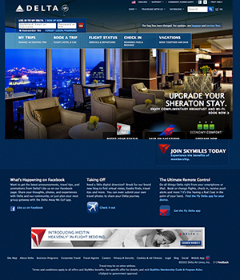
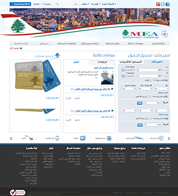
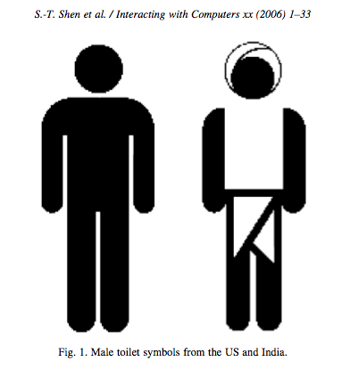

~
“A user interface should be simple, natural to use and enjoyable for the user to interact with, adjustable and sensitive enough to deal with cultural issues, and embedded with added values that make the user’s experience richer and more meaningful (Shen). ”
The end goal of user experience design is maximizing usability, the basic tenets of which include learnability, efficiency, and satisfaction for the user (Badre).
Professional analysts and designers generally agree that well-designed user interfaces improve the performance and appeal of the web, helping to convert “tourists” or “browsers” to “residents” or “customers” (Marcus). As part of their 2002 study, Fogg, Soohoo, and Danielson found that 46.1% of consumers assessed credibility (relating to trustworthiness, quality, and expertise) of corporate sites based on the overall visual design (Cyr). Designing for a particular culture shows those users that the corporation values them as clients.
Conceptual Models and Metaphors
In The Design of Everyday Things, Donald Norman suggests that the ideal design allows the user to intuitively understand how the product or website works without explicit instruction. This type of immediate understanding and ease of use is essential for any site seeking to compete with the 3.62 billion web pages indexed by the top four search engines in October 2013 (Worldwide Web Size).
One way to quickly communicate instructions to the user is through a good conceptual model, which helps the user to predict the effects of his or her actions. By emulating a product or design that the user is already understands and is accustomed to using, the designer can create a metaphor for understanding the functionality of the new user experience. Norman suggests that this deeper level of understanding enables the user to solve their own problems instead of blindly following instructions (Norman). An effective metaphor should reinforce the user’s conceptual model of how the interface should work and enhance human-computer interactions.
However, Norman also writes that, “each culture has a set of allowable actions for social situations.” People often feel frustrated when their intuition and cultural heritage is not accepted and they are left without conventions for dealing with a new situation or product (Norman).
The trashcan on the desktop is a simple example of a conceptual model gone awry. It is meant to be a place for deleted items that can be retrieved until the trash is emptied. However, in some cultures the idea of digging something out of the trash seems illogical and degrading (Shen).
In their research, “Towards Culture-Centered Design,” Shen, Woolley and Prior looked for a conceptual model to explain the layout and use of the desktop that could be adapted to a wide range of cultures. Criteria for selecting a metaphor included culture richness, suitability to the tasks of the interface, pleasurability, non-technical, and adaptability to different cultures and functional contexts.
They concluded that a garden provided the best context for the desktop. It was important to the study that both gardens and computers could be places for relaxation, entertainment, creation, knowledge, communication and socializing. They found that a garden is considered to be a doorway to a culture, and thus, the metaphor could be easily transferred and adapted to other cultures. Shen, Woolley, and Prior suggested that the garden metaphor could intuitively teach someone who was unfamiliar with the desktop how it was meant to be used. For example, the desktop of a computer requires maintenance and organization, which could be compared to caring for a garden (Shen).
Page Layout
The organization of space on a web page is crucial to usability. American designers widely accept that the top left area of a page will be looked at first and should contain important information about the product or company in addition to indicating the purpose of the page to the user. However, where a person looks first is largely due to the orientation of text in their culture. Del Galdo and Neilson (1996) demonstrated that the direction of the design reflects various psychological and social associations in different cultures (Cyr). For example, Middle Eastern sites orient text, links, and graphics from right-to-left (Badre).
Delta Airlines website
Middle Eastern Airlines website
The position of the title/logo is a clear indicator of the difference in layout direction between the two cultures. The most important information is placed on the top-left for Delta, an American airline, and top-right on the Middle Eastern Airlines site. Also note the alignment of body text in the forms and credits.
Layout also influences menu design, which according to Yu and Roh (2002), is essential to effective information retrieval systems. Effective layout design builds a contextual and structural model to help users find the information they are looking for and understand what is provided. The design is a communication bridge between the designer and the user (Cyr).
It is also important for interface designers to consider how the majority of users from a culture or region may access the digital product or website they are designing. For example, the majority of Internet access in some countries in Africa, such as Nigeria, Sudan, and Ethiopia, as well as India, is through a mobile device (StatCounter). This smaller interface requires a radically different approach to the spatial organization of content.
Color Associations
Source: Badre.
The color scheme is a major factor a user’s comfort level and overall satisfaction with the user experience. An “irritating” color scheme may cause the user to leave the site prematurely, before successfully completing their task. Cultures differ greatly in the emotions associated with certain colors (see figure to right for example data). Simon’s (2001) research found that Asians prefer less bright colors while western cultures prefer lighter and brighter colors with more images to create a modern style (Simon).
Iconography
As web design has evolved, the use of icons has been effective in adding visual stimulation and simplicity to an interface. Icons are also used as replacements for text that would otherwise need to be translated to different languages. However, the translation can still be lost in an icon that may be interpreted to reference something entirely different than the designer intended. For example, the Japanese are unsettled by pictorial representations of body parts in icons (Shen).
Sometimes it makes sense to localize or “glocalize” established standard icons to fit local traditions and values. For example, in India some have adapted the standard ISO-type man to a traditional Indian outfit with a white turban and a sarong (Shen).
Sloppy use of symbols as metaphors can cause confusion. Cultures with high uncertainty avoidance would prefer explicit text to the ambiguity of icons (Marcus & Gould). However, an icon-based user interface is often highly successful with Chinese users and other cultures whose language is character-based because they are used to communicating through iconography (Shen).